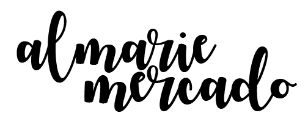

evening lights
02/13/2018
digital-mobile, .jpg
i had a thought of seeing something perceived as "beautiful," as something that is weird/odd by being distorted.
to create this artwork, i converted my JPG file into a BMP file. i then used Audacity to play with some of the effects that it had provided and saved it as a BMP file with the encoding of "U-Law". (i had to open my files in Windows:Paint since PhotoShop did not want to co-operate with my "Glitch"). after being satisfied with what i had created, i opened the new file with WordPad and saved it as is. (for Windows, it was able to further glitch the photo by just saving the file after it loaded). i then created this GIF using PhotoShop by importing each photo as a layer and using each layer as a new frame.
Flowers Glitch /
F g L l O i W t E c R h S
09/25/2019
hd color video, 1080p, 0"1"05.
again, i wanted to change something "beautiful" and thought it would look cool if it were glitched.
to make this glitch, i used TouchDesigner and basically just played around with the settings of the noise, transform, mirror, open color, luma level, over, and edge until i was "satisfied" with my finish product.